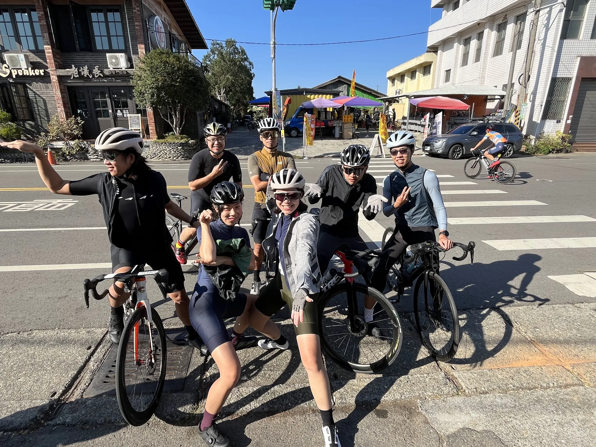
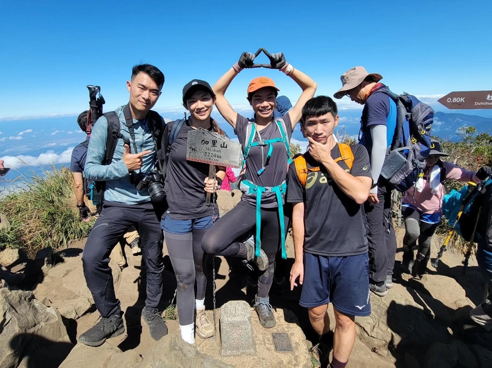
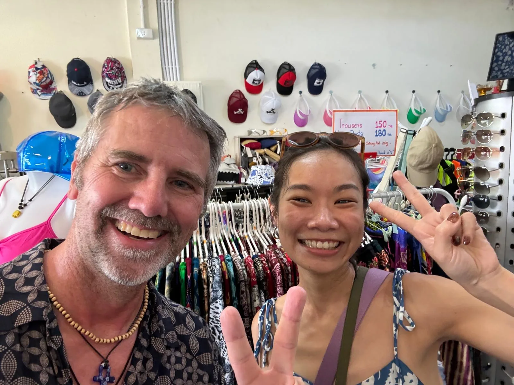

I make the unclear discussable.
I ask questions, map the experience, and make constraints visible so the team can work from a shared understanding.
See how I clarified the claim journey →ABOUT MAGGIE
Hi, I’m Maggie, you can also call me Jiahui 嘉惠. I’m a Product Manager with a background in product design.
I turn ambiguous needs and complex workflows into clear product decisions, helping teams build experiences they can deliver, measure, and improve.
My path from industrial design to Product Designer and then Product Manager has shaped how I work: I look closely at where people get stuck, then explore the systems, operational needs, and technical constraints behind the experience.
Across connected e-bike experiences and dealer service tools, I bring those perspectives together to help teams decide what matters, what to build first, and how to know whether it works.
Understanding physical products and the realities of making them.
Connecting user needs with clear user flows and interactions.
Bringing product direction, team decisions, and delivery together.
I ask questions, map the experience, and make constraints visible so the team can work from a shared understanding.
See how I clarified the claim journey →I enjoy working across disciplines, weighing user value against dependencies and team capacity to find a practical way forward.
See how I focused the first Flex release →I care about whether the product works in people’s hands. I use feedback and data to follow up on decisions and guide improvements.
See how I helped improve rider reliability →Cycling helps me feel both strong and relaxed. Away from the bike, I enjoy hiking and traveling — sometimes with friends, sometimes on my own.

Rides with friends, occasional races, and the simple joy of being out on the bike.

I also enjoy hiking — a different pace and a chance to spend time outside with friends.

With friends or on my own, travel gives me room to meet people and experience different cultures.